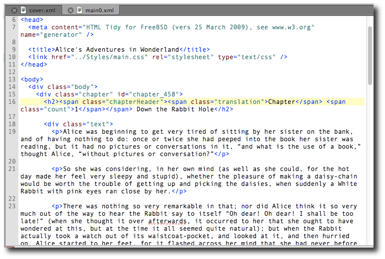

Code View
— Direct HTML Editing —
Code View allows you to directly edit the HTML code included in your EPUB and is the most common way to edit files for advanced users.

Use the Preview window to display a read-only book view version of the page you are editing in Code View.
Code View is very powerful, but you must be careful when editing it to ensure you enter valid HTML code.
In addition to displaying your HTML code exactly as it is in your EPUB, Code View highlights tags and elements in colors to make it easier to read and identify issues.
You can change the colors used for highlighting in Code View using Preferences.
Formatting
All of the buttons on the formatting toolbar are available for you to use.
Context Menu
Right-click on text to see a context menu which includes the following options:
- Clips: Select from any text Clips you have defined.
- Add To Clips: Save the selected text to your Clips.
- Go To Link Or Style: Same as .
- Mark Selected Text: Same as . May also show Unmark Marked Text.
- Reformat HTML:
- Clean Source: Clean the current file using your preferences.
- Clean Source – All HTML Files: Clean all HTML files using your preferences.
- To Valid HTML: Modify the current file to make it valid HTML if they aren’t already.
- To Valid HTML – All HTML Files: Modify all HTML files to make them valid HTML if they aren’t already.
Right-click on a misspelled word to see these options:
- suggestions: Select from suggested alternatives.
- Add To Default Dictionary: Save the word to the default dictionary selected in Preferences.
- Add To Dictionary: Save the word to the dictionary you select from the submenu.
- Ignore: Skip spell checking this word until Sigil is restarted.
Right-click on an image to see these options:
- View Image: Displays the image in a resizable window. You can also Ctrl Click on the filename or use the Go To Link Or Style shortcut. View Image will resize the image to fit the window, and can remain open while you edit.
- Open Tab For Image: Opens the image file in a tab at full resolution.
Plus the usual options:
- Undo
- Redo
- Cut
- Copy
- Paste
- Delete
- Select All